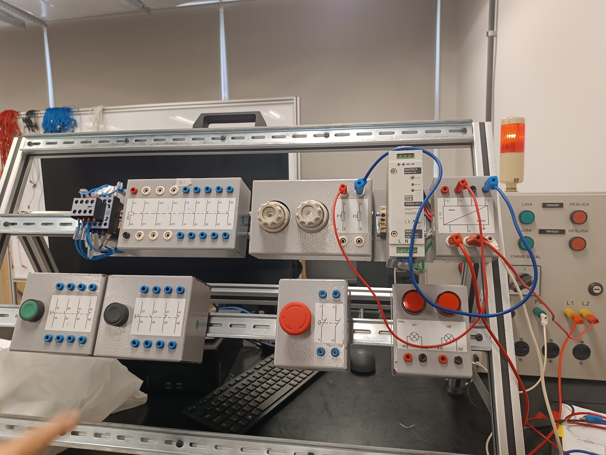
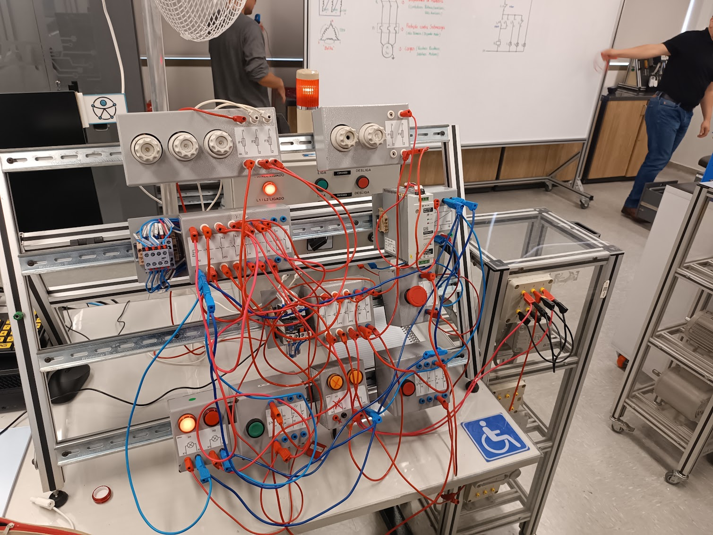
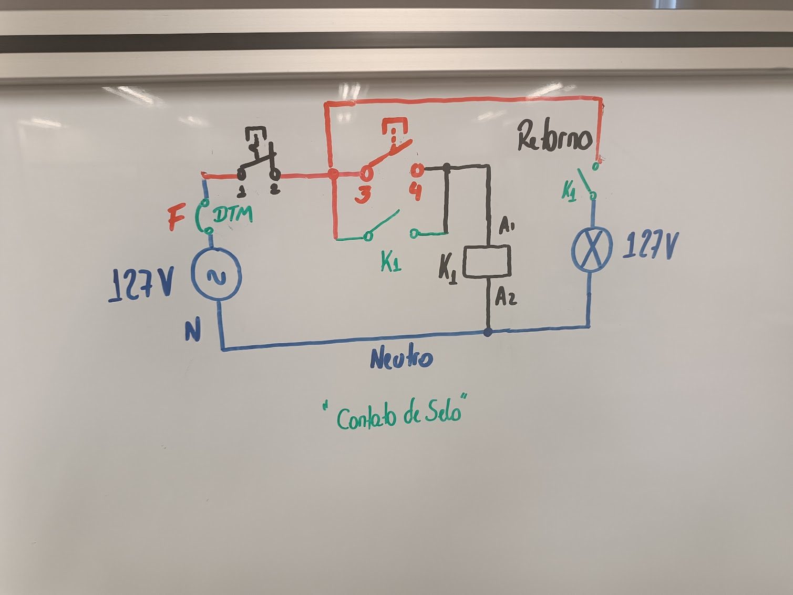
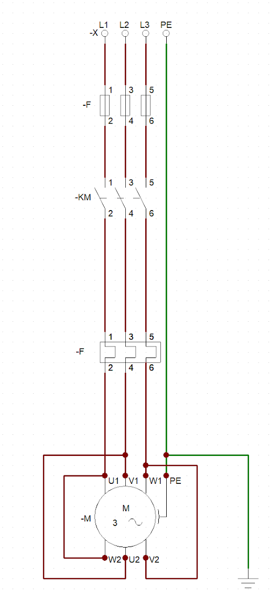
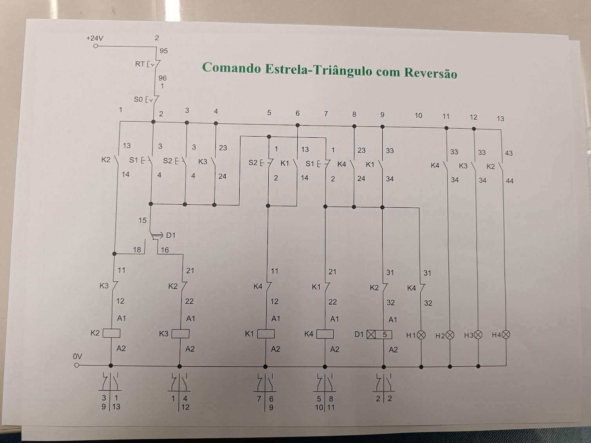

Componentes de comando
Contato prático com contatores, botoeiras, sinaleiros, fonte de alimentação, dispositivos de proteção e outros componentes utilizados nos circuitos.
Formação presencial concluída — 68 horas

Concluí a formação presencial “Aprenda a montar painéis de comandos elétricos para partida de motores”, realizada entre maio e julho de 2026, com carga horária total de 68 horas.
Durante o curso, tive contato teórico e prático com componentes, diagramas e circuitos utilizados no acionamento, controle, proteção e sinalização de motores elétricos.
Essa formação complementa meus estudos em refrigeração e climatização, pois contatores, relés, dispositivos de proteção e circuitos de comando estão presentes em diversos equipamentos e sistemas da área.
Ao longo da formação, estudei e pratiquei conceitos relacionados a:
Esses conhecimentos representam uma base prática inicial em comandos elétricos. Continuo desenvolvendo essa formação por meio dos estudos de eletricidade aplicada, automação e sistemas de refrigeração e climatização.
As atividades práticas envolveram a interpretação dos diagramas, identificação dos componentes, montagem das ligações na bancada, realização de testes e análise do funcionamento dos circuitos.

Contato prático com contatores, botoeiras, sinaleiros, fonte de alimentação, dispositivos de proteção e outros componentes utilizados nos circuitos.

Montagem de circuitos em bancada didática, seguindo diagramas elétricos e verificando o funcionamento dos acionamentos e da sinalização.

Estudo do contato de selo, utilizado para manter o contator energizado após o acionamento da botoeira de liga, até que o comando de parada seja utilizado.

Representação do circuito trifásico de potência, incluindo proteção, contator, relé térmico, motor e condutor de proteção.

Exercício de leitura e montagem baseado em um diagrama de comando com contatores, intertravamentos, temporização, reversão e sinalização.
O curso ajudou a compreender a diferença entre circuito de comando e circuito de potência e a função de cada componente dentro do acionamento de um motor elétrico.
As práticas também reforçaram a importância de interpretar o diagrama antes da montagem, conferir as conexões, realizar os testes com atenção e entender a sequência lógica de funcionamento do circuito.
Esta formação não representa experiência profissional ou domínio completo de comandos elétricos. Ela demonstra uma base técnica e prática que continuo desenvolvendo e que pode contribuir para minha atuação futura em manutenção, refrigeração, climatização e automação.
Certificado referente à formação presencial de 68 horas, concluída no período de 7 de maio a 7 de julho de 2026.